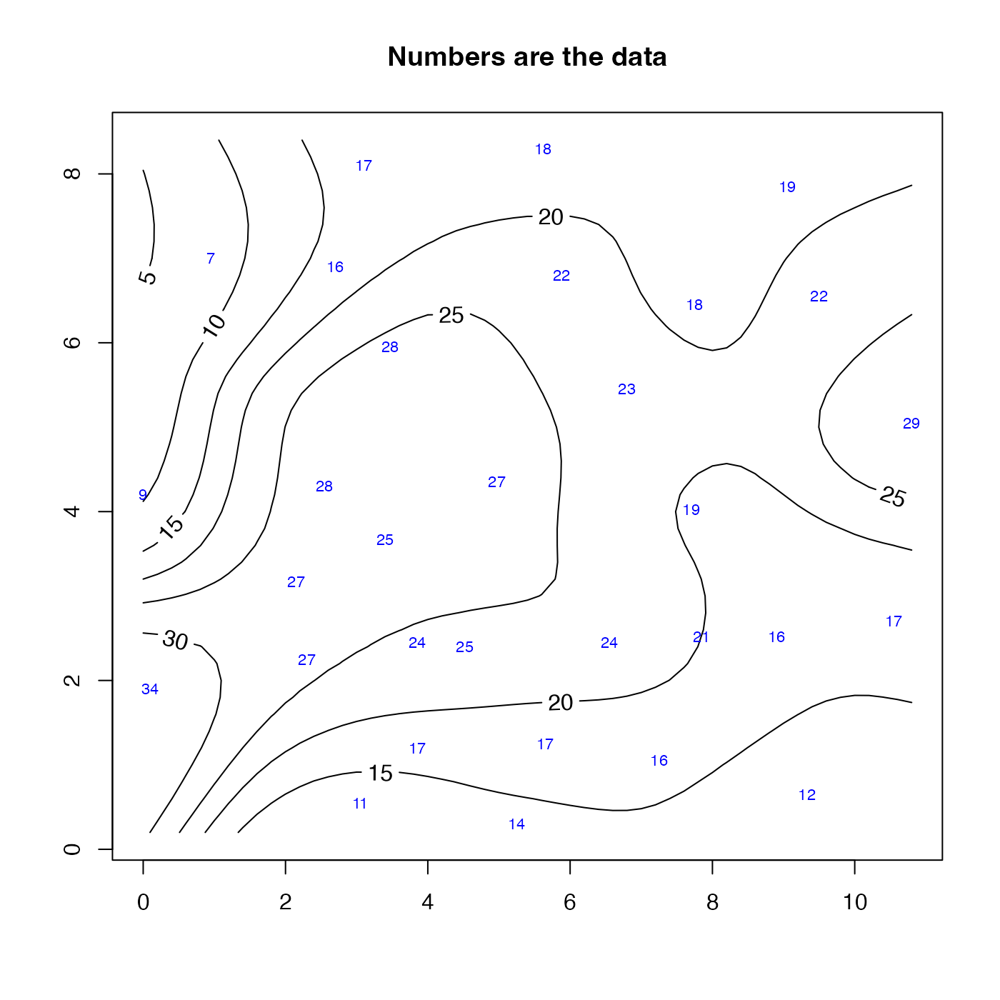
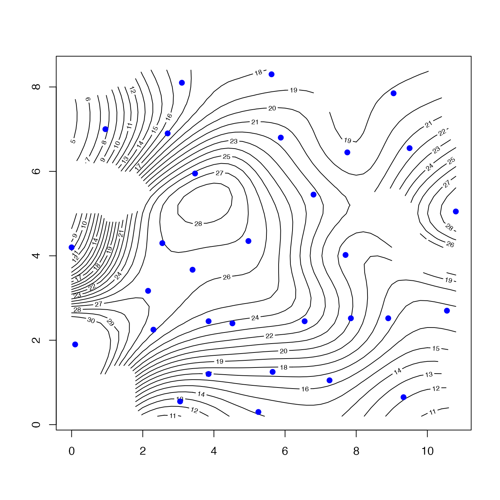
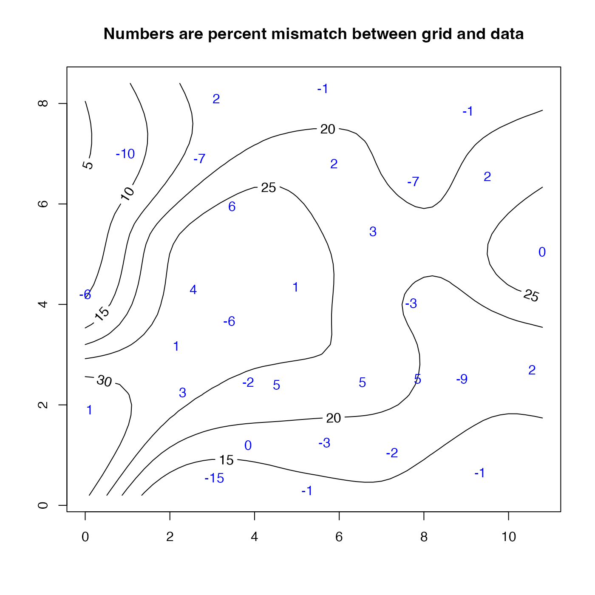
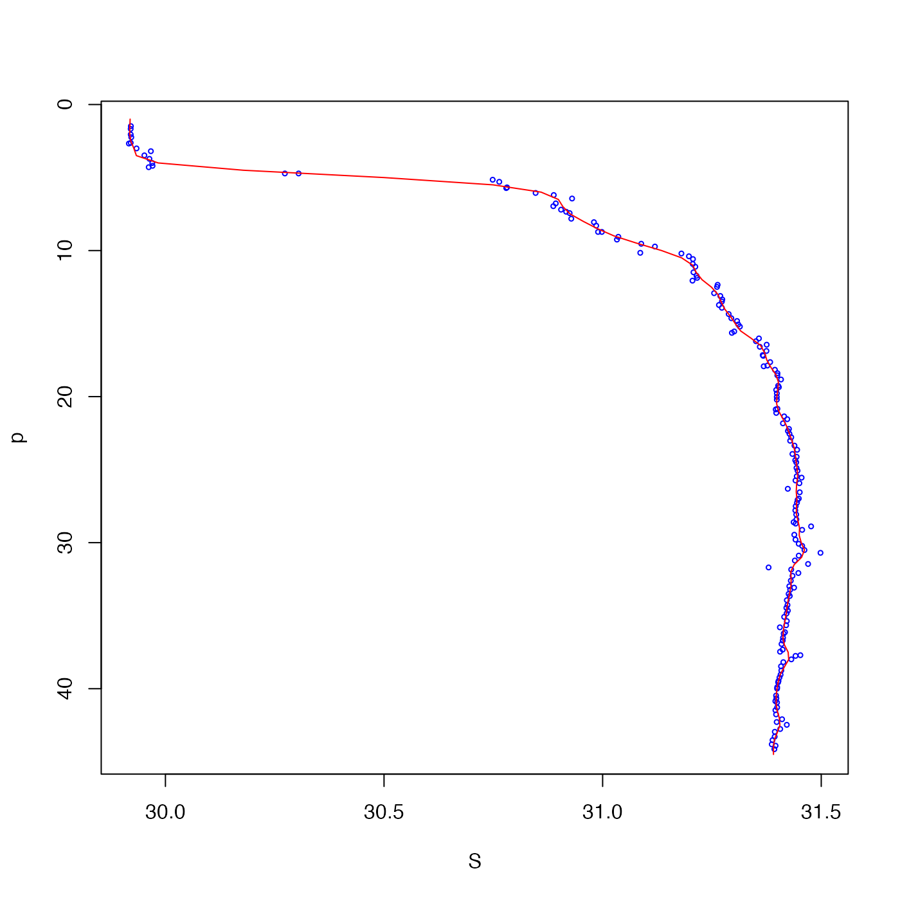

The algorithm follows that described by Koch et al. (1983), except
that interpBarnes adds (1) the ability to
blank out the grid where data are
sparse, using the trim argument, and (2) the ability to
pre-grid, with the pregrid argument.
interpBarnes(
x,
y,
z,
w,
xg,
yg,
xgl,
ygl,
xr,
yr,
gamma = 0.5,
iterations = 2,
trim = 0,
pregrid = FALSE,
debug = getOption("oceDebug")
)a vector of x and y locations.
a vector of z values, one at each (x,y) location.
a optional vector of weights at the (x,y) location. If not
supplied, then a weight of 1 is used for each point, which means equal
weighting. Higher weights give data points more influence. If pregrid
is TRUE, then any supplied value of w is ignored, and instead
each of the pregriddd points is given equal weight.
optional vectors defining the x and y grids. If not supplied,
these values are inferred from the data, using e.g. pretty(x, n=50).
optional lengths of the x and y grids, to be constructed with
seq() spanning the data range. These values xgl are only
examined if xg and yg are not supplied.
optional values defining the x and y radii of the weighting ellipse. If not supplied, these are calculated as the span of x and y over the square root of the number of data.
grid-focussing parameter. At each successive iteration, xr and
yr are reduced by a factor of sqrt(gamma).
number of iterations. Set this to 1 to perform just
one iteration, using the radii as described at xr,yr above.
a number between 0 and 1, indicating the quantile of data weight
to be used as a criterion for blanking out the gridded value (using
NA). If 0, the whole zg grid is returned. If >0, any spots
on the grid where the data weight is less than the trim-th
quantile() are set to NA. See examples.
an indication of whether to pre-grid the data. If
FALSE, this is not done, i.e. conventional Barnes interpolation is
performed. Otherwise, then the data are first averaged within grid cells
using binMean2D(). If pregrid is TRUE or
4, then this averaging is done within a grid that is 4 times finer
than the grid that will be used for the Barnes interpolation. Otherwise,
pregrid may be a single integer indicating the grid refinement (4
being the result if TRUE had been supplied), or a vector of two
integers, for the grid refinement in x and y. The purpose of using
pregrid is to speed processing on large datasets, and to remove
spatial bias (e.g. with a single station that is repeated frequently in an
otherwise seldom-sampled region). A form of pregridding is done in the
World Ocean Atlas, for example.
a flag that turns on debugging. Set to 0 for no debugging information, to 1 for more, etc; the value is reduced by 1 for each descendent function call.
A list containing: xg, a vector holding the x-grid);
yg, a vector holding the y-grid; zg, a matrix holding the
gridded values; wg, a matrix holding the weights used in the
interpolation at its final iteration; and zd, a vector of the same
length as x, which holds the interpolated values at the data points.
S. E. Koch and M. DesJardins and P. J. Kocin, 1983. ``An interactive Barnes objective map analysis scheme for use with satellite and conventional data,'' J. Climate Appl. Met., vol 22, p. 1487-1503.
See wind().
library(oce)
# 1. contouring example, with wind-speed data from Koch et al. (1983)
data(wind)
u <- interpBarnes(wind$x, wind$y, wind$z)
contour(u$xg, u$yg, u$zg, labcex=1)
text(wind$x, wind$y, wind$z, cex=0.7, col="blue")
title("Numbers are the data")

# 2. As 1, but blank out spots where data are sparse
u <- interpBarnes(wind$x, wind$y, wind$z, trim=0.1)
contour(u$xg, u$yg, u$zg, level=seq(0, 30, 1))
points(wind$x, wind$y, cex=1.5, pch=20, col="blue")

# 3. As 1, but interpolate back to points, and display the percent mismatch
u <- interpBarnes(wind$x, wind$y, wind$z)
contour(u$xg, u$yg, u$zg, labcex=1)
mismatch <- 100 * (wind$z - u$zd) / wind$z
text(wind$x, wind$y, round(mismatch), col="blue")
title("Numbers are percent mismatch between grid and data")

# 4. As 3, but contour the mismatch
mismatchGrid <- interpBarnes(wind$x, wind$y, mismatch)
contour(mismatchGrid$xg, mismatchGrid$yg, mismatchGrid$zg, labcex=1)
# 5. One-dimensional example, smoothing a salinity profile
data(ctd)
p <- ctd[["pressure"]]
y <- rep(1, length(p)) # fake y data, with arbitrary value
S <- ctd[["salinity"]]
pg <- pretty(p, n=100)
g <- interpBarnes(p, y, S, xg=pg, xr=1)
plot(S, p, cex=0.5, col="blue", ylim=rev(range(p)))
lines(g$zg, g$xg, col="red")
